Welcome to the MarchingSquaresTerrain guide
You've built places in Roblox Studio and want to make your own pixel-art worlds in Godot. This guide takes you from "I've never opened Godot" to a sculpted, painted, lit island with props you modelled yourself, running as a real game.
Who this guide is for
This guide is for artists and builders coming from Roblox Studio. You know Parts, the Move / Scale / Rotate tools, Union and Negate, the Terrain Editor, the Explorer and Properties windows, and the Toolbox. You have never opened Godot, and you don't want to write code.
Every page explains Godot's own words the first time they come up (node, scene, Inspector, res:// and so on). Red Coming from Roblox boxes link what you already know to the new way of doing it:
The Scene dock is your Explorer, the Inspector is your Properties window, F6 is Play and F8 is Stop. If you'd like the addon's modelling tools laid out like Studio, there's a Roblox UI switch that gives you a Model / Edit ribbon with Move, Scale, Rotate, snapping and Union / Negate on the keys you already know.
You don't need a powerful computer to follow along. Every screenshot and clip in this guide comes from the real Godot editor.
What MarchingSquaresTerrain is
MarchingSquaresTerrain (MST for short) is a Godot add-on with three parts that work together:
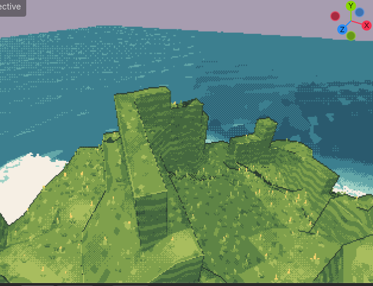
Sculpt hills, cliffs and ramps with brushes, paint 16 ground textures, scatter grass, trees and rocks, and grow your map one chunk at a time. Like Roblox's Terrain Editor, but on a grid of cells.

A renderer that turns the 3D scene into crisp pixel art with outlines and palettes, plus sky, day / night, weather, water, birds, fireflies, smoke and fire, each added with one click.
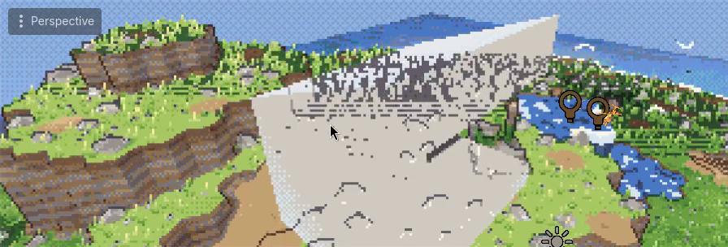
Model your own props: block them out with Parts the Studio way (Roblox UI), then edit faces, edges and vertices with Extrude, Inset, Bevel and Loop Cut, and paint them.
Under the hood the add-on is a GDExtension: a compiled extension that Godot loads automatically, so there is nothing to switch on. (That's why the Plugins tab in Project Settings looks empty; see page 1.)
What you can make
All of these come from the pages of this guide. Click any picture to enlarge it.
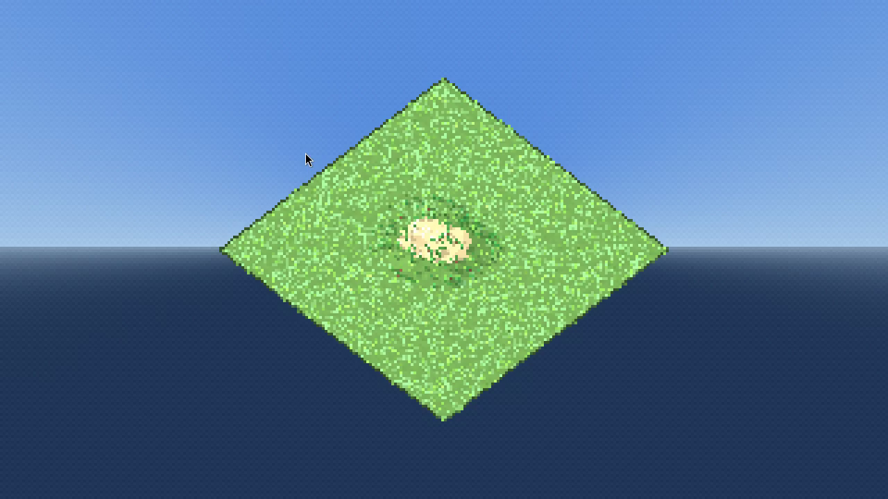
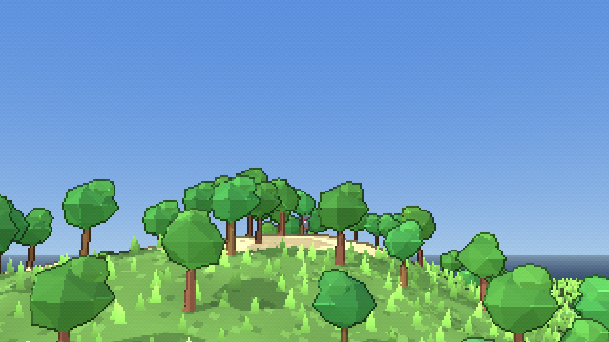

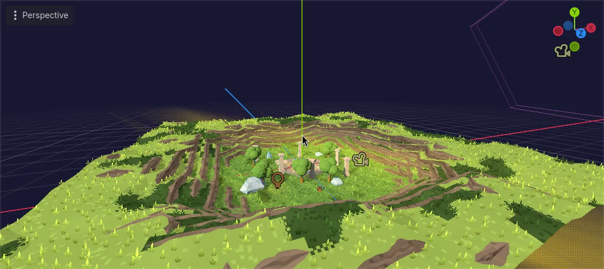
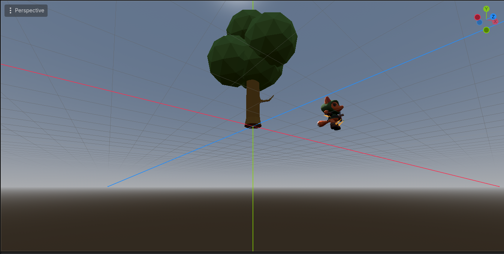
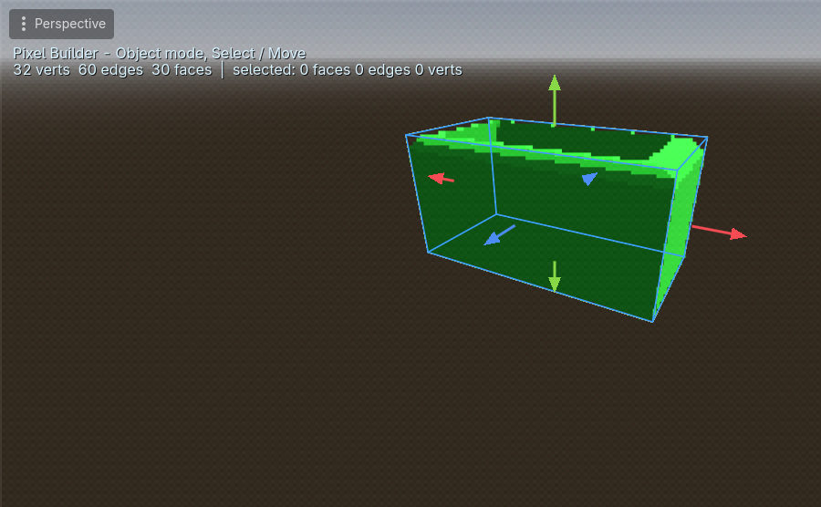
Suggested learning path
Read the chapters in order if you're new. Pages 1 and 2 get you to a running world in about an hour. After that, each group goes deeper into one area, so you can jump to whatever you need. The pages in Reference are for looking things up.
Start here

Terrain

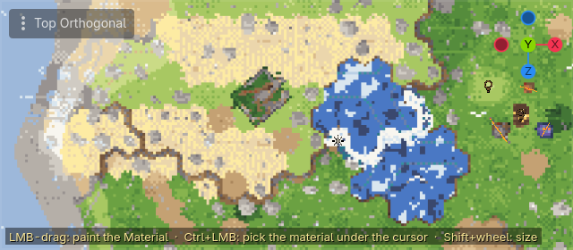
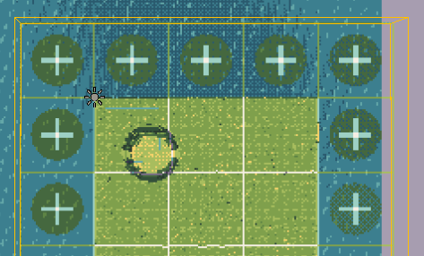
The pixel look
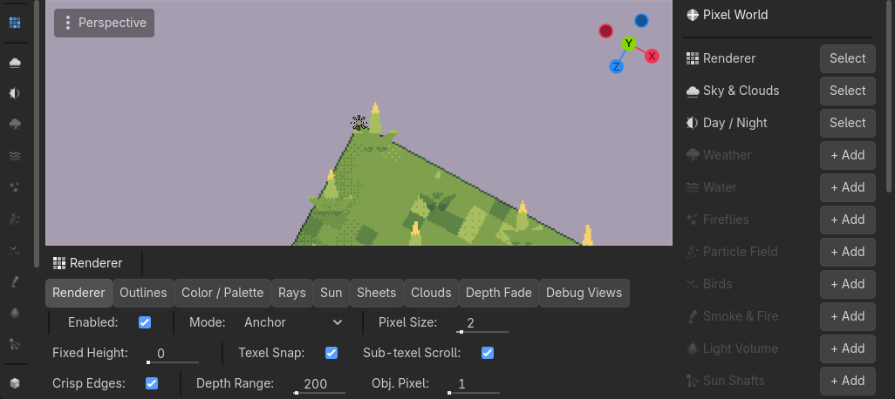
Builder (modelling)
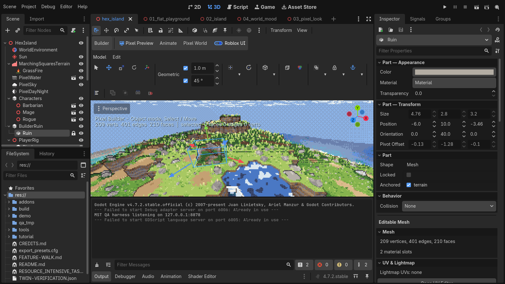

Models


Reference


Do page 1 and page 2, then jump straight to page 9 if you mostly want to build, or page 3 if you mostly want landscapes. Keep page 14 open in another tab.
How to use this guide
🔎 Search
Type in the box at the top of every page. It searches every heading and paragraph in the guide, so try a Roblox word ("Explorer", "Union", "Anchor") or a control name ("Pixel Size").
◐ Light / dark
The half-moon button at the top right switches between light and dark. Your choice is remembered.
☰ Chapters & contents
The left sidebar lists every chapter. Long pages also show an On this page list that follows you as you scroll. On a phone, open the chapters with ☰.
← → Previous / next
The bottom of each page links to the chapter before and after it, in the order of the learning path.
The interactive bits
The pages are made to be played with, not just read:
- Clips loop silently while on screen. Use the speed buttons under each clip to slow it down (0.5×) or speed it up.
- Screenshots enlarge when you click them. Press Esc or click again to close.
- Before / after sliders: drag the round handle across the picture to compare two states.
- Scrubbers: drag a slider to step through pictures of one setting at different values (for example Pixel Size 1, 2, 4, 8).
- Hotspot tours: click the numbered dots on a picture of a panel to learn what each part does.
- Tabs switch between alternatives, such as the different sculpt tools.
- Filter boxes above long reference lists hide everything that doesn't match what you type.
- Check yourself questions open when you click them, so you can test yourself first.
Tutorial steps have a tick box. Ticks are remembered in this browser, so you can close the guide and pick up where you left off. Try it here:
- Open the project in Godot 4.7 (the Project Manager lists it as Marching Squares Terrain; double-click it).
- Read Godot for Roblox builders and learn to orbit the camera with the middle mouse button.
- Build and run your first world.
- Pick the next group of chapters from the learning path above.
Ticks and the light / dark choice are saved in your browser only. A private window, a different browser or clearing site data starts you fresh.
Follow-along scenes
Ready-made scenes for the guide live in the project folder res://tutorial/guide/. (res:// is Godot's name for your project folder; you'll find it in the FileSystem dock at the bottom left.) Double-click a .tscn file there to open it. Use them to compare with your own work, or to skip ahead.
| Scene | What's inside | Used on |
|---|---|---|
first_world.tscn | The finished quick-start world: a 2×2-chunk terrain with a sculpted hill, a levelled patch, a sand-painted area and scattered trees, plus Camera, PixelRenderer, Sun, WorldEnvironment, DayNight, Water and Birds. Self-contained. | 2 |
first_world_player.tscn | The same world plus the demo player (PlayerRig, a knight) already moved to Position (5, 8, 4), above the hill. Press F6 and walk around with WASD. | 13 |
sculpt_playground.tscn+ sculpt_playground_data.res | A flat 3×3-chunk square-grid terrain at height 0 with the pixel look, water, sky, day / night and an orbit camera: a blank canvas for trying every sculpt tool. Its terrain data lives in the .res file next to it (keep the two together). | 3 |
greybox_tower.tscn | A small greybox watchtower built with the Roblox UI: a floor, three walls, a front wall with a doorway cut by Negate + Union, a wedge roof and stairs, all in the built-in Grid material. | 9 |
modelled_prop.tscn | The "terracotta crate": a builder mesh shaped by extrude → inset → recess → bevelled rim, then painted. Self-contained. | 10 |
imported_models.tscn | Two imported models placed in a scene: the courtyard's round tree and the textured, rigged fox character, both from the add-on's own assets. | 11 |
model_uses.tscn | The courtyard demo plus a custom foliage entry, "Round Tree (custom model)", that paints the round-tree model. Shows a model used as foliage and as placed props (fountain, pillars, trees and stones under one PixelObject, each with collision). | 12 |
Opening a follow-along scene and saving over it changes the reference copy. To experiment safely, use Scene → Save Scene As… first and give your copy a new name.
The other chapters use the project's own example scenes, such as res://tutorial/01_flat_playground.tscn, res://tutorial/03_pixel_look.tscn, res://tutorial/04_world_mood.tscn and the demo island res://demo/hex_island.tscn. Each page says which one at the top.
Versions
| What | Version used in this guide |
|---|---|
| Godot editor | Godot 4.7 (screenshots taken on 4.7.2.stable). The add-on needs at least 4.7. |
| MarchingSquaresTerrain add-on | The GDExtension shipped in this project at res://addons/MarchingSquaresTerrain/ (version 0.1.0), November 2026 build |
| Renderer | The project's default renderer (Compatibility) |
Several add-on fixes landed while this guide was being made. For example, Shift/Alt+wheel no longer zoom the camera, and new parts no longer look dark. If something behaves differently from the clips, check Troubleshooting, which has a section on older builds.